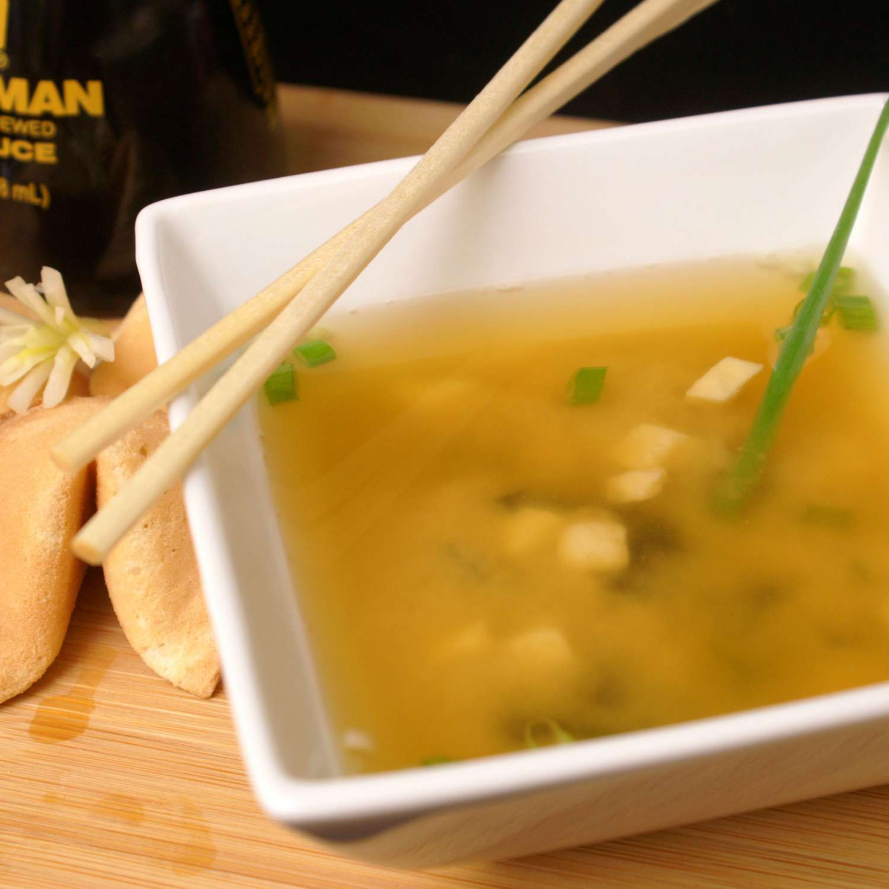

Miso Soup

This miso soup is full of savory flavors. Add more dashi to your soup if you want a stronger stock. You can use yellow, white, or red miso paste for this soup — yellow miso is sweet and creamy, red miso is stronger and saltier.
Description
- Prep Time: 5 mins
- Cook Time: 10 mins
- Total Time: 15 mins
- Servings: 4
Ingrediets:
- 4 cups water
- 2 teaspoons dashi granules
- 3 tablespoons miso paste
- 1 (8 ounce) package silken tofu, diced
- 2 green onions, sliced diagonally into 1/2 inch pieces
Steps:
- Combine water and dashi granules in a medium saucepan over medium-high heat; bring to a boil. Reduce heat to medium and whisk in miso paste. Stir in tofu. Separate the layers of green onions, and add them to the soup. Simmer gently for 2 to 3 minutes before serving.
Nutrition facts:
Servings Per Recipe 4, Calories 63, % Daily Value *
- Total Fat 2g 3%
- Saturated Fat 0g 2%
- Sodium 513mg 22%
- Total Carbohydrate 5g 2%
- Dietary Fiber 1g 4%
- Total Sugars 2g
- Protein 6g 11%
- Vitamin C 1mg 2%
- Calcium 38mg 3%
- Iron 1mg 6%
- Potassium 159mg 3%
* Percent Daily Values are based on a 2,000 calorie diet. Your daily values may be higher or lower depending on your calorie needs.
** Nutrient information is not available for all ingredients. Amount is based on available nutrient data.
(-) Information is not currently available for this nutrient. If you are following a medically restrictive diet, please consult your doctor or registered dietitian before preparing this recipe for personal consumption.